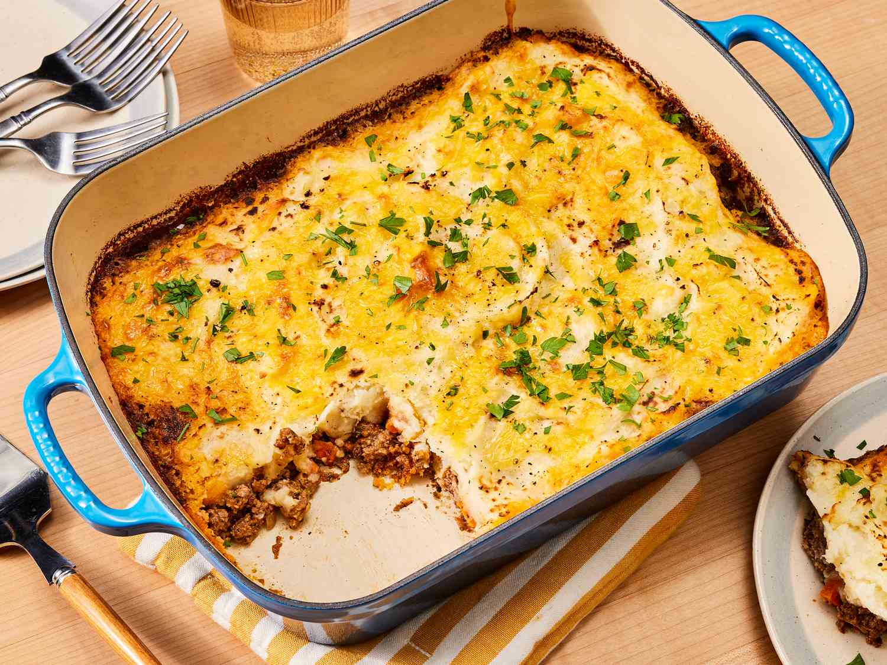

CottagePie
Cottage Pie
Cottagepie

-
Heat 1 tbsp olive oil in a large saucepan and fry 1¼kg beef mince until browned – you may need to do this in batches.
Set aside as it browns.
-
Put the other 2 tbsp olive oil into the pan, add 2 finely chopped onions, 3 chopped carrots and 3 chopped celery sticks
and cook on a gentle heat until soft, about 20 mins.
-
Add 2 finely chopped garlic cloves, 3 tbsp plain flour and 1 tbsp tomato purée, increase the heat and cook for a few
mins, then return the beef to the pan.
-
Pour over a large glass of red wine, if using, and boil to reduce it slightly before adding the 850ml beef stock, 4 tbsp
Worcestershire sauce, a few thyme sprigs and 2 bay leaves.
Home
Chickenpie